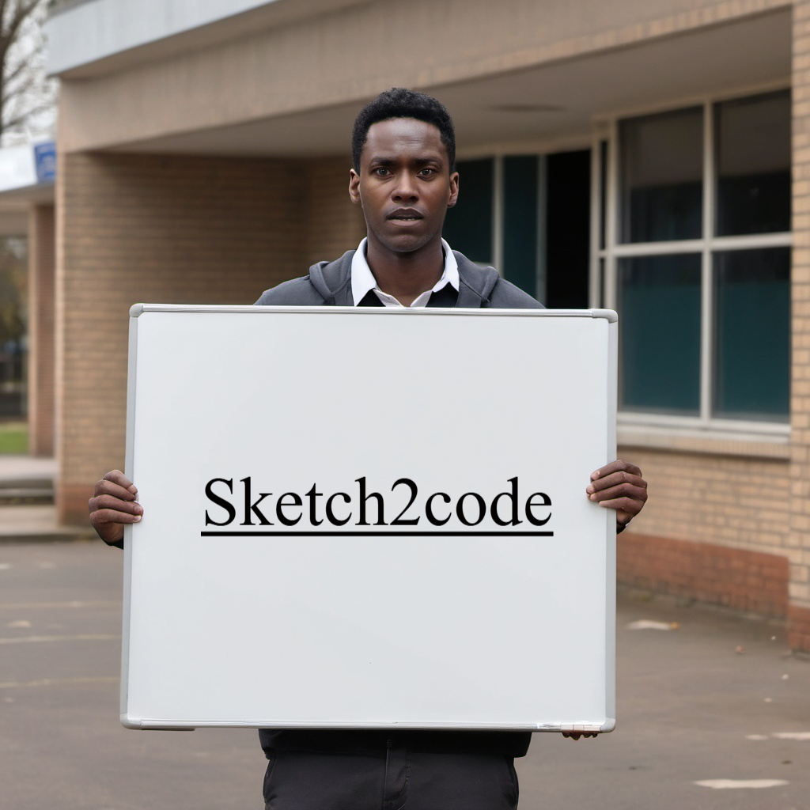

My work
Selection of my range of works

Student of Computer Engineering
I’m a backend developer who loves building powerful and efficient systems using Java and Spring Boot. I’ve created APIs that drive seamless communication between applications and ensure smooth database management with Liquibase for structured migrations. Whether it’s handling complex data flows or optimizing backend performance, I focus on making systems scalable and reliable.
On the frontend, I work with React and React Native, with a special passion for mobile app development. I enjoy crafting smooth, user-friendly experiences that feel natural and intuitive. From designing interactive interfaces to connecting with my backend services, I make sure every app I build is polished, responsive, and ready to perform across different devices.
I also dive into the world of Machine Learning and AI, exploring how technology can interpret handwriting and sketches in creative ways. One of my projects predicts a writer’s identity based on handwriting, while another transforms sketches into functional code. I’m fascinated by the possibilities of AI-driven solutions that bridge the gap between human creativity and technology.
Java Backend Developer | AI/ML Explorer
I’m a final-year Computer Engineering student at Thapathali Campus, passionate about building innovative and efficient software solutions. My journey in tech has led me to work extensively with Java and Spring Boot, where I develop robust backend systems, create APIs, and manage databases using Liquibase for smooth migrations.
On the frontend, I specialize in React and React Native, with a strong focus on mobile app development. I love designing and developing apps that provide seamless user experiences while ensuring they are well-integrated with backend services. Creating polished, high-performing applications is something I take pride in.
I’m also deeply interested in Machine Learning and AI, working on projects that push the boundaries of what’s possible. From handwriting-based writer prediction to transforming sketches into functional code, I enjoy exploring AI-driven solutions that blend creativity and technology. My goal is to keep learning, innovating, and building impactful digital experiences.
Selection of my range of works